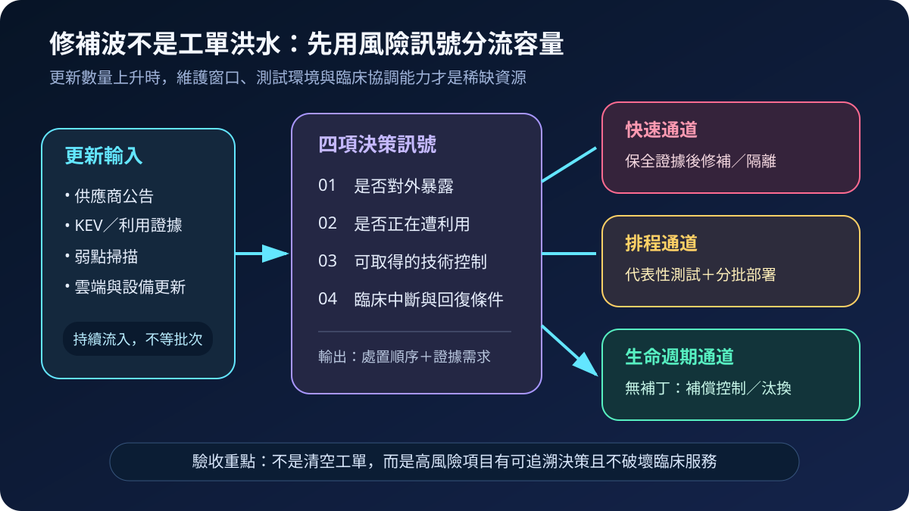
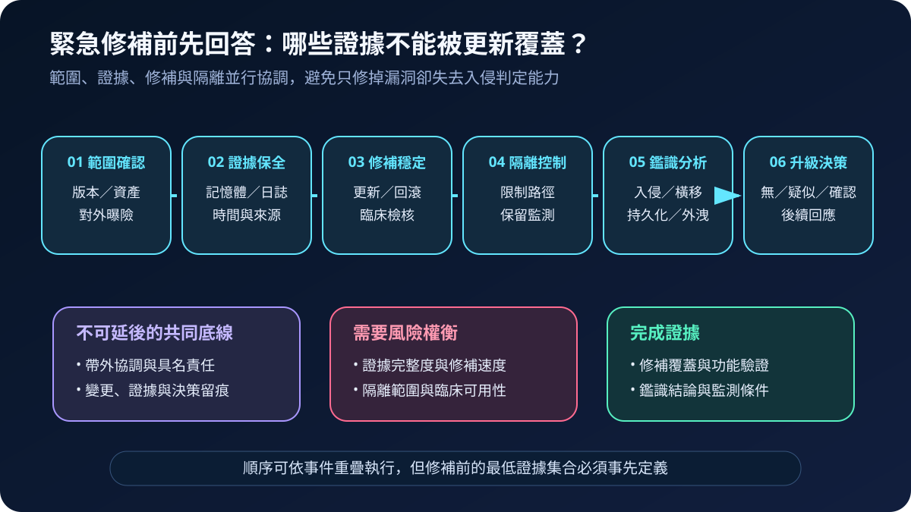
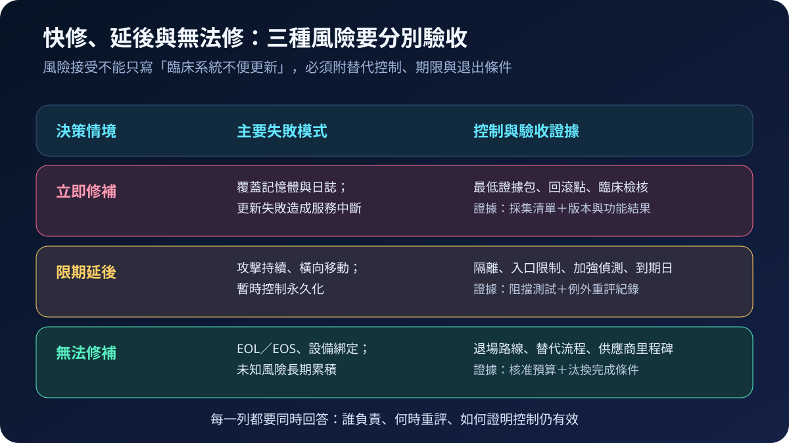

醫療資安國際觀察 · 2026-09-11
醫療緊急修補如何先保住證據：從修補波到鑑識分流
作者：Dr. William｜醫療資訊與資安治理實務工作者
漏洞通知大量湧入時，醫院不能只追求更新速度。修補可能覆蓋記憶體與日誌，也可能中斷臨床服務；有效流程必須同時分配修補容量、保留最低鑑識證據，並驗證病人照護功能。
名詞解釋：修補波、鑑識分流與最低證據包
修補波（patch wave）是大量軟體更新在短期內集中出現，使測試、維護窗口與供應鏈協調同時承壓。鑑識分流（forensic triage）不是完整鑑識調查，而是快速確認範圍、保全易失資料、分析入侵跡象並決定是否升級事件回應。最低證據包可包含受影響資產、時間同步狀態、記憶體或程序資訊、驗證與端點日誌、網路連線及採集紀錄；內容應依系統與情境預先定義。
國際現況與適用邊界
英國 NCSC 於 2026 年 5 月 1 日示警，AI 加速漏洞發現與利用，組織應準備更快速、頻繁且大規模的更新；對外曝險面與關鍵安全系統應優先，無法更新的生命週期技術則須恢復支援、隔離或汰換。美國 CISA 於 2026 年 6 月發布取代 BOD 22-01 的 BOD 26-04 實施指引，並在 8 月 25 日更新，將範圍確認、證據保全、修補穩定、隔離、分析及升級決策串成漏洞鑑識分流。
法域與效力：CISA BOD 26-04 的強制要求適用於美國聯邦文職行政機關；頁面上的分流時程部分明列為建議性最佳實務。NCSC 內容是英國官方風險建議。兩者均不是台灣醫院的法定期限，台灣機構可採用其風險訊號與證據順序，再依本地規範、臨床安全、製造商指示及契約設定時限。
規劃：把容量與證據寫進弱點管理
治理範圍應涵蓋網際網路邊界、雲端、端點、醫療設備與第三方維運。資安團隊負責利用訊號、範圍及證據需求；系統與臨床工程負責版本、測試與回滾；臨床服務負責人確認替代流程；事件指揮者協調修補、隔離與鑑識優先序。驗收指標可包含通知至範圍確認時間、最低證據完成率、對外曝險資產處置時間、修補失敗率、臨床檢核通過率及逾期例外數。

實作：建立可並行的六步快速通道
- 確認範圍：比對 CVE、版本、資產、對外曝險與臨床用途，無法判定者列入待查風險。
- 保全證據：先收集易失資料與核心日誌，記錄來源、時間及採集人員；不得為追求完整而無限延後處置。
- 修補與穩定：取得證據後執行更新，保留回滾點並由臨床端驗證關鍵功能。
- 隔離控制：限制入口與橫向路徑，但避免過早中斷監測或驚動仍在活動的威脅者。
- 分流分析：確認未授權存取、橫向移動、持久化及資料外洩跡象。
- 升級決策：依無入侵證據、疑似或確認入侵，決定加強監測、持續調查或啟動完整事件回應。
風險：快修、延後與無法修都可能失敗
立即更新可能破壞證據或臨床功能；延後更新會延長遭利用窗口；EOL／EOS 系統則可能永遠等不到補丁。每項決策都應記錄權責人、證據狀態、替代控制、回復方式、到期日與重新評估條件。自動更新適合經驗證且可回復的範圍，不能無差別套用到安全關鍵設備。

可執行清單
- 是否能在通知後快速列出受影響版本、資產、擁有人與臨床用途？
- 重開機或更新前，是否已有依系統分級的最低證據包？
- 修補、隔離、鑑識與臨床決策是否由同一事件節奏協調？
- 代表性測試是否涵蓋功能、介接、效能、告警及回滾？
- 無法立即修補者是否有經測試的補償控制與到期日？
- 結案是否同時證明版本、覆蓋率、臨床功能與入侵判定結果？
來源
- UK NCSC｜Preparing for a ‘vulnerability patch wave’（發布：2026-05-01；查閱：2026-09-11）
- CISA｜BOD 26-04: Implementation Guidance for Prioritizing Security Updates Based on Risk（發布：2026-06-10；更新：2026-08-25；查閱：2026-09-11）
內容說明
本文依健康台灣深耕計畫相關治理內容整理，並參考 NCSC 與 CISA 公開資料，提出台灣醫療機構可採用的修補容量、證據保全與臨床驗收框架；不取代主管機關公告、法律意見、製造商指示或個案事件指揮決策。